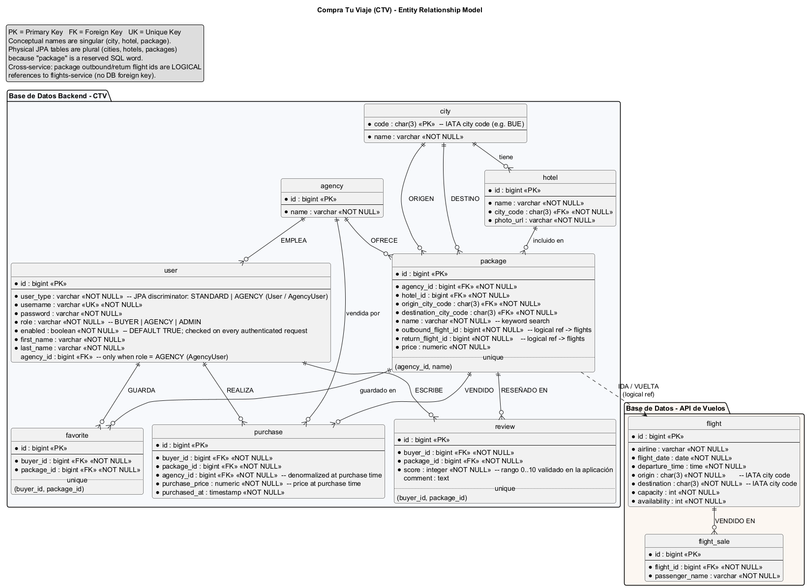

Comprador
Se registra solo. Filtra el catálogo, marca favoritos, compra, ve el precio que pagó y reseña una sola vez algo que ya compró.
buyer / buyer123
La pantalla nunca habla con la base ni con los vuelos. Habla con nuestra API. Esa API guarda el paquete y, si hace falta un asiento, llama por adentro a un servicio de vuelos con otra base. Abajo está el sistema en ocho frases. El resto de la página es el detalle para defenderlo. La rama es dev bb30daf, la misma del PR #24 hacia main.
El sistema, en ocho frases
Cómo se conecta, cuando alguien usa la app
Cómo se publica el mismo código
En una miradaCompra Tu Viaje arma, busca y vende paquetes turísticos. Un paquete es de una agencia: hotel, ciudad de origen, ciudad de destino, vuelo de ida, vuelo de vuelta y precio. El asiento no es nuestro: lo reserva otro sistema.
La fraseVendemos paquetes de agencias: hotel, origen, destino, ida, vuelta y precio. El asiento no es nuestro. La pantalla habla solo con nuestra API, la que Swagger titula CTV - Backend API, en el puerto 8080.
Los tres rolesEl comprador busca, guarda, compra y reseña. La agencia publica y ve sus ventas, y no manda su id: el backend usa la de la sesión. El admin carga hoteles y vuelos. POST /flights es solo admin: una agencia que lo intenta recibe 403.
Si te cortanEsta entrega cierra el admin, el archivo de una oferta ya vendida, el seed que no pisa, el bloqueo del último asiento, y la cadena de tests hasta Azure.
Antes de esta entrega el comprador ya podía buscar, comprar, guardar favoritos y reseñar. Esta entrega cierra el producto y la forma de entregarlo: admin, archivo de ofertas, datos de demo que no se pisan, el último asiento, y la cadena de tests, imágenes y Azure.
Se registra solo. Filtra el catálogo, marca favoritos, compra, ve el precio que pagó y reseña una sola vez algo que ya compró.
buyer / buyer123
Publica, edita, archiva y borra sus paquetes eligiendo hotel y vuelos de listas. Ve las ventas de su agencia. No crea vuelos.
agency / agency123 · Despegar
Crea agencias y usuarios, carga hoteles y vuelos, publica paquetes de cualquier agencia, consulta el historial y mira cuatro reportes Top 5.
vferreyra / vferreyra
El vuelo no es una tabla nuestra. Es un sistema externo, con su propia base. El paquete solo guarda el número del vuelo. Compras, permisos, historial y fallas de red salen de esa separación.
active=false.En una miradaHay tres programas nuestros y dos bases. El navegador solo ve la pantalla y nuestra API. Vuelos no tiene puerto público: el backend lo llama por la red interna de Docker.
La fraseEl navegador baja React en el 8090 y después llama al 8080 con Authorization: Bearer. Vuelos no tiene puerto público: el backend lo alcanza por flights-service:8081. No abre la base de vuelos.
Si señalan SwaggerEl grupo Flight Services es la puerta pública: buscar, ver y, solo el admin, crear. La descripción de ese grupo dice que vender un asiento no está ahí. Lo dispara POST /purchases. Por adentro, FlightsClient hace POST /flights/{id}/sales con passengerName y, si hay que deshacer, DELETE /flights/sales/{id}.
Si te cortanVuelos no está en backend-net, así que no puede leer paquetes ni usuarios. La pantalla tampoco: solo está en frontend-net.
Se lee de afuera hacia adentro: quién usa el sistema, qué proceso corre, qué red lo aísla y en qué capa del código vive cada decisión.
Comprador, agencia y administrador entran por el navegador. Ninguno habla con la base ni con vuelos. El único cliente de la API es la pantalla.
Pantalla, API y vuelos son nuestros. Cada programa Kotlin tiene su PostgreSQL. Grafana, Zipkin y Kibana están para mirar, no para vender.
La pantalla no autoriza. El controller no vende asientos. El repositorio no llama a vuelos. Esa llamada sale solo de FlightsClient.
| Vista | Se abre en |
|---|---|
| Quién lo usa, y el contrato con el navegador | Los permisos y la API. |
| Procesos, redes Docker e imágenes | Este paso. Infraestructura dice quién observa. CI y Azure, cómo se publica cada imagen. |
| Capas, recorridas por un clic | El clic. Ahí se ve qué se queda en la API y qué cruza a vuelos. |
| Dueño de cada dato | Esquemas: las dos bases y el número que las une. |
| Qué pasa si una conexión falla | La lógica: compensación, bloqueo, copia de la compra y corte de protección. |
Leé de izquierda a derecha. El 1 baja la pantalla. El 2 es la llamada a nuestra API, con el token. El 3 es la llamada interna a vuelos. El recuadro de abajo no vende: sirve para mirar el sistema mientras corre.
frontend-net y no reenvía la API. Vuelos no publica puerto: el backend lo alcanza por flights-net. La base del negocio está solo en backend-net, y vuelos no entra a esa red.| Conexión | Qué sí pasa | Qué no pasa |
|---|---|---|
| Navegador → frontend | Archivos estáticos | Token, SQL, vuelos |
| Navegador → backend | Pedidos HTTP con token. Es el contrato de la API | SQL y el servicio de vuelos |
| Backend → su Postgres | JPA hacia backend-postgres | Las tablas de vuelos. Comparte flights-net para el HTTP y no tiene datasource de esa base |
| Backend → flights-service | HTTP: buscar, ver, crear, vender y cancelar | Las tablas de vuelos. El paquete guarda solo el id |
| Vuelos → su Postgres | JPA, con el lock del asiento | Usuarios, paquetes y compras |
El diagrama de arriba dice qué proceso existe. Esta tabla dice quién puede hablar con quién adentro de Docker. El navegador no usa ninguna de estas redes: entra por los puertos que publicamos en la máquina.
| Red | Quién está | Qué aísla |
|---|---|---|
frontend-net | Solo el frontend | nginx no ve bases ni APIs. Sirve la SPA en el puerto 8090. |
backend-net | Backend, su Postgres, Prometheus, Grafana y Logstash | La base del negocio. flights-service no está acá: no puede leer paquetes ni usuarios. |
flights-net | Vuelos, su Postgres, el backend, Prometheus y Logstash | El stock. El backend entra para llamar por HTTP a flights-service:8081. No abre flights_dev. |
tracing-net | Backend, vuelos y Zipkin | La traza de una compra, de un servicio al otro. Las bases no están en esta red. |
logging-net | Logstash, Elasticsearch y Kibana | El índice de logs. Kibana no ve Postgres. Logstash es el puente: también está en las dos redes de negocio para recibir el JSON. |
Vuelos no puede leer paquetes ni usuarios: no está en backend-net. El backend sí comparte red con la base de vuelos, porque tiene que alcanzar al servicio. No abre esa base. No tiene host, usuario ni repositorio de flights_dev. La regla vive en FlightsClient.
| Pieza | De quién es | Qué guarda o qué hace |
|---|---|---|
| Pantalla | Nosotros | React y TypeScript. Vite la compila, nginx la sirve en el 8090. No tiene base. La dirección de la API queda adentro del paquete que se descarga. |
| API del negocio | Nosotros | Reglas, seguridad, historial y reportes. Su Postgres se llama backend_dev. |
| Servicio de vuelos | Nosotros, en el papel de un sistema externo | Alta, búsqueda, venta y cancelación de asientos. Su Postgres se llama flights_dev. El paquete solo guarda el número del vuelo. |
| Herramientas para mirar | Imágenes de terceros | Métricas, el recorrido de una compra entre los dos programas, y logs. No venden. |
controller recibe HTTP y traduce errores a 400, 401, 403, 404 y 503.service tiene la regla y la transacción.persistence habla con Postgres. Ahí están los bloqueos de fila.external/flights es el único que conoce la URL de vuelos.ArchUnit falla el build si una clase no está en su capa.
api/ llama al backend y manda el token.auth/ esconde pantallas según el rol. Es comodidad: la seguridad está en el backend.Es una API chica que armamos para ocupar el lugar de un sistema de aerolíneas. Lista, busca, crea, vende un asiento y cancela esa venta. Tiene su propia base y su propio stock. El backend lo trata como si no pudiera verle las tablas: si está caído, reintenta y después corta. Si la vuelta no tiene lugar, devuelve el asiento de la ida.
En una miradaCada clic es un pedido HTTP a nuestra API. Primero se comprueba el token y el rol. Después corre la regla. La pantalla no baja el catálogo entero: pide una página y la siguiente es otro pedido.
La fraseCada clic es un pedido a nuestra API. El filtro relee el usuario: cuenta apagada o agencia inactiva es 401, y no llega al controller. SecurityConfig mira verbo y ruta: rol corto, 403. La fila de Swagger es el controller. La regla fina vive en el service.
Qué llama a vuelosGET /packages no. Filtra, ordena y corta la página en nuestro Postgres. GET /packages/{id} sí pide ida y vuelta, y si vuelos no responde el paquete igual vuelve. Comprar no tiene esa tolerancia: sin los dos asientos no hay 201.
La páginaLa 0 es la primera. La pantalla pinta content y arma los botones con totalPages. La siguiente es otro pedido, no un recorte en el navegador.
La seguridad no es el menú. Sin token, o con la cuenta apagada, la respuesta es 401. Con token válido y rol insuficiente, es 403. La regla fina —por ejemplo, que una agencia no edite el paquete de otra— vive en el service.
| Paso | Quién | Qué hace |
|---|---|---|
| 1 | Navegador | Pide http://localhost:8090. nginx devuelve el JavaScript de React. Ahí termina el frontend como servidor. |
| 2 | React | Si hay sesión, manda GET /users/me con el JWT guardado. Los filtros de /trips están en la URL del navegador y se copian al query de la API. |
| 3 | axios | Llama a http://localhost:8080. Agrega Authorization: Bearer …. Si la respuesta es 401, borra la sesión y vuelve al login. |
| 4 | JwtAuthenticationFilter | Lee el token, busca el usuario en la base y arma el rol. Cuenta deshabilitada o agencia inactiva: 401, sin llegar al controller. |
| 5 | SecurityConfig | Mira verbo y ruta. /auth/** es público. /admin/** es ADMIN. Comprar es BUYER. Crear vuelos es ADMIN. Si el rol no alcanza: 403. |
| 6 | Controller | Valida el JSON. Traduce la ruta a un método. Eso es lo que ves en Swagger: un @Tag por grupo y un @Operation por fila. |
| 7 | Service | La regla y la transacción. Comprar, archivar y vender un asiento viven acá, no en el controller. |
| 8 | Postgres del backend | Paquetes, usuarios, compras. Flyway ya migró el esquema. Hibernate solo valida que coincida. |
| 9 | FlightsClient | Solo si la operación necesita un vuelo: detalle, alta de vuelo o compra. Habla por HTTP con flights-service, que tiene la otra base. Esas llamadas de venta no aparecen en Swagger. |
Buscar el catálogo no necesita al otro servicio. Lo necesitan el detalle, crear una oferta, cargar un vuelo y comprar. Si vuelos no responde en una lectura, la pantalla igual muestra lo que ya está en nuestra base. En la compra no hay esa tolerancia: sin los dos asientos no hay ticket.
| Operación | Se resuelve en nuestra API | Llama a vuelos |
|---|---|---|
GET /packages | Filtros, orden y una página, en su Postgres | No |
GET /packages/{id} | Paquete, hotel y reseñas | findById de ida y vuelta. Si falla, el paquete igual vuelve |
POST y PUT /packages | La oferta y el dueño | findById, para armar origen y destino y exigir que ida, vuelta y hotel cierren |
PUT /packages/{id}/status | Archivar o volver a publicar | Solo al republicar: findById, fecha vigente y lugares. Archivar no llama a vuelos |
GET y POST /flights | El permiso. El backend no guarda el vuelo | Busca o crea, y devuelve lo que respondió el otro servicio |
POST /purchases | Lock del paquete, agencia activa, y el ticket | sell de ida y de vuelta. Si la vuelta falla, cancelSale de la ida |
GET /purchases/{id} | El ticket y la copia histórica | findById para mostrar los vuelos. Si falla, el ticket igual vuelve |
SecurityConfig dice qué rol puede entrar.GET /cities, GET /hotels, GET /agencies, GET /packages/agency, GET /favorites y GET /admin/reports devuelven la lista entera. El Top 5 ya viene cortado en cinco por la consulta SQL. El catálogo, el historial y las consultas de admin sí paginan.
La pantalla pinta content y arma los botones con totalPages. La página 0 es la primera. La siguiente es otro pedido a la API, no un recorte en el navegador.
| Campo | Qué es |
|---|---|
content | Los ítems de esa página. |
page | El número de página. Empieza en 0. En /trips, si es 0, se omite de la URL. |
size | Cuántos ítems pidió. Cada lista tiene su tope. |
totalElements | Cuántos resultados hay en total, no solo en esta página. |
totalPages | Cuántas páginas salen de ese total. |
first y last | Solo el historial de compras. Dicen si estás en un extremo. |
| Lista | Quién pide la página | Tope de size | Orden |
|---|---|---|---|
GET /packages y GET /admin/packages | El catálogo no manda size: el backend usa 20. El admin de paquetes pide 10. page va en la URL de /trips y, si es 0, se omite. | 50. Un pedido más grande se recorta. Un sort desconocido responde 400. | Por defecto name,asc. También price, destination.name y rating. El puntaje no es una columna: se ordena en la consulta. |
GET /purchases/me, /purchases/agency, /admin/sales | La pantalla pide page y size=20. | De 1 a 100. Fuera de ese rango, 400. | Compras propias: date,desc o por precio. Agencia y admin filtran comprador, paquete y fechas. |
GET /admin/users, favoritos, reseñas y compras globales | El cliente pide size=20. | De 1 a 100. | Sin orden elegido por la UI. Son consultas de lectura. |
Filtrar en /trips cambia la dirección del navegador, y esa dirección es el pedido GET /packages. El backend arma la consulta, corta la página en Postgres y devuelve solo esa página. La siguiente es otro pedido.
En una miradaLa compra no es una sola transacción entre las dos bases. Se vende la ida, se intenta la vuelta y, si la vuelta falla, se deshace la ida. El último asiento sí queda cerrado con un bloqueo de fila.
La compraPOST /purchases es la única ruta pública que vende asientos. El body es {"packageId": 1}. Bloqueamos la fila del paquete, vendemos la ida, intentamos la vuelta. Si la vuelta no tiene lugar, cancelamos la ida, no guardamos compra y devolvemos 400. Si el guardado local falla, cancelamos las dos. El ticket responde 201 con el precio de ese momento.
Qué no es una caídaUn “sin lugar” es negocio: no se reintenta y no abre el corte. El 503 es cuando vuelos no responde. Tres reintentos de 500 ms, solo si no hay conexión. Si falla la mitad de las últimas diez, el corte abre diez segundos.
El límite, sin que lo preguntenNo hay una transacción única entre las dos bases. Si la cancelación también falla, runCatching se traga el error y puede quedar un asiento vendido sin compra. No hay cola de reintentos.
Cada fila es una pregunta posible. La segunda columna es la respuesta. La tercera es el límite que hay que decir sin que te lo pregunten.
| Qué había que resolver | Qué hicimos | El límite, en voz alta |
|---|---|---|
| Los vuelos son de otro dominio | Un servicio y una base propios. El backend solo guarda ids. | Hay que resolver fallas de red y una compra que toca dos sistemas. |
| La compra no puede quedar a medias | Se vende la ida, se intenta la vuelta y, si falla, se cancela la ida. Si falla el guardado local, se cancelan las dos ventas. | Si la cancelación también falla, el error se ignora y puede quedar un asiento sin compra. No hay una cola de reintentos. |
| Dos personas y el último asiento | Se bloquea la fila del vuelo en Postgres. La segunda espera, relee y ve cero lugares. | Ese bloqueo vive en la base de vuelos. La compra, además, bloquea la fila del paquete para no cruzarse con un archivo. |
| El historial no puede cambiar | La compra guarda una copia: precio, nombres, hotel, ciudades y números de vuelo de ese momento. | Los reportes de destinos vendidos usan ese código histórico. El ranking de puntaje usa el destino actual del paquete. |
| Una oferta vendida se quiere retirar | Archivar (active=false). Sale del catálogo y rechaza compras. El detalle sigue desde el historial. | Borrar queda solo para paquetes sin compras, reseñas ni favoritos. Republicar exige vuelos vigentes y con lugar. |
| El rol puede cambiar con la sesión abierta | El token dura 24 horas y en cada pedido se vuelve a leer el usuario. Cuenta apagada o agencia inactiva responden 401. El rol sale de esa lectura. | La protección contra CSRF está apagada porque el token va en un encabezado, no en una cookie. |
| Vuelos puede estar caído | Tres reintentos de 500 ms solo si no hay conexión. Si falla la mitad de las últimas 10 llamadas, el corte abre 10 segundos y el usuario recibe 503. | Un “sin lugar” es un error de negocio: no se reintenta y no abre el corte. Crear un vuelo tiene corte y no tiene reintento. |
| La demo no puede pisar el trabajo | Los datos de demo se cargan una vez, en una transacción, y si ya están no se vuelven a cargar. No hay botón de reset. | Una demo desde cero se hace con el Compose de pruebas o borrando los volúmenes a propósito. |
| Hay que entregar el mismo código que se probó | GitHub prueba cada pull request. La imagen se marca con el id del commit. La máquina en Azure la descarga y no compila. | Sonar espera el veredicto solo en main. El botón de merge todavía no está bloqueado por esos checks. |
El comprador manda POST /purchases con el id del paquete.
El backend bloquea la fila del paquete en backend_dev. Exige agencia activa y paquete publicado. Ese lock no está en la base de vuelos.
Le pide a vuelos la ida. Vuelos bloquea la fila de ese vuelo en flights_dev y, si hay lugar, devuelve la venta.
Le pide la vuelta. Si no hay lugar, cancela la ida, el asiento vuelve y el comprador recibe 400. No se guarda compra.
Si las dos ventas salen bien, el backend guarda la compra en su base, con precio y snapshots, y responde 201.
Si las dos ventas salieron y después falla el guardado local, se cancelan las dos. Ese caso está en la tabla de arriba y en el borde del final de este paso.
PurchaseService.purchase. El bloqueo del vuelo es FlightService.sell con FlightRepository.findForUpdate. Cucumber comprueba la compensación y que el precio queda congelado. Un test de Postgres comprueba que dos ventas no se llevan el último asiento.Las rutas están en SecurityConfig y los servicios vuelven a mirar el rol. Comprar, favoritos, reseñas e historial propio son del comprador. Paquetes y ventas de la agencia son del vendedor, si su cuenta y su agencia están activas. /admin/**, escribir hoteles y crear vuelos son del admin. El admin no puede deshabilitarse ni quitarse el rol.
/admin/users y /admin/agencies gestionan. /admin/flights y /admin/packages cargan inventario y ofertas. /admin/sales es el historial global. Favoritos, reseñas y compras son consultas paginadas de solo lectura. /admin/reports trae cuatro rankings de como máximo cinco filas, calculados en la base: compradores, agencias, destinos vendidos y destinos mejor puntuados.
Elegimos deshacer la ida, y no una transacción única entre las dos bases, porque eso las acoplaría. El último asiento sí quedó cerrado con el bloqueo. Lo que sigue abierto es la cancelación que falla: runCatching se traga el error. En la configuración hay un timeout de 3 segundos que no está anotado en el cliente, así que no está aplicado. Lo que sí corre es el reintento y el corte de protección.
En una miradaLa base del negocio guarda personas, agencias, hoteles, paquetes y compras. La base de vuelos guarda capacidad y asientos vendidos. No hay una clave foránea entre ellas: el paquete guarda dos números, ida y vuelta.
La fraseDos Postgres, sin clave foránea entre ellos. El paquete guarda outboundFlightId y returnFlightId. La compra copia precio, nombres, hotel, ciudades y esos números. Por eso GET /purchases/me no se mueve si mañana cambia el paquete.
Si preguntan por borrarBorrar un paquete con compras, reseñas o favoritos es 400. Borrar un hotel que un paquete usa es 409: el historial tiene que seguir apuntando. En Swagger está en Hotel Services → Eliminar hotel, y el cuerpo del error trae httpCode, httpStatus y errorData.description.
El seedSe carga una vez. Reiniciar no pisa usuarios, permisos, historial ni stock. /internal/demo/* existe solo en vuelos y no sale en este Swagger.
El diagrama chico es el límite. El dibujo de abajo, el MER, es el detalle de cada tabla. A la izquierda el negocio, a la derecha los vuelos.
En el dibujo los nombres son los del dominio, en singular: ciudad, paquete, usuario. En Postgres las tablas están en plural (cities, hotels, packages) porque package es una palabra reservada de SQL. La línea de ida y vuelta hacia el vuelo no es una clave foránea: es el número que guarda el paquete.

docs/mer.puml. Esta copia es docs/mer.png, al lado de este HTML. PK es la clave de la tabla, FK una clave hacia otra tabla de la misma base, UK un valor que no se puede repetir.| Etiqueta del dibujo | Qué relación es |
|---|---|
| EMPLEA | La agencia y el usuario vendedor. agency_id existe solo cuando el rol es AGENCY. |
| OFRECE | La agencia y el paquete que publica. |
| ORIGEN y DESTINO | El paquete y dos ciudades. La ciudad usa el código IATA como clave. |
| tiene / incluido en | La ciudad y el hotel que está en esa ciudad. |
| GUARDA | El comprador y un favorito. Uno por comprador y paquete. |
| REALIZA | El comprador y la compra. |
| vendida por / guardada en | La compra apunta a la agencia y al paquete, y además copia nombres y precio del momento. |
| ESCRIBE | El comprador y su reseña. |
| VENDIDO y RESEÑADO EN | La reseña y el paquete. También es única por comprador y paquete. |
| IDA / VUELTA | El paquete y el vuelo. Es un id, no una foreign key. El vuelo vive en la otra base. |
| VENDIDO EN | El vuelo y cada asiento vendido, con el nombre del pasajero. |
| Dato | Para qué existe | Regla que protege |
|---|---|---|
user | Una sola tabla. El rol es BUYER, AGENCY o ADMIN. El vendedor es un AgencyUser con agencia. | Username único. enabled apaga la cuenta. El registro público solo crea compradores. |
agency | Quien publica paquetes. | active. Apagarla esconde sus paquetes, bloquea a sus vendedores y rechaza compras nuevas. El historial queda. |
city y hotel | La ciudad usa el código IATA como clave. El hotel pertenece a una ciudad. | Escribir hoteles es de admin. Leerlos es de cualquier usuario logueado. |
package | La oferta: agencia, hotel, origen, destino, dos ids de vuelo, precio y active. | El nombre es único dentro de la agencia. active=false es archivado: sale del catálogo y no se puede comprar. |
purchase | La venta, con precio, fecha y una copia del comprador, paquete, agencia, hotel, ciudades e ids de vuelo. | Si mañana cambian el precio o el nombre, el ticket no se mueve. La migración que agregó esa copia es la V2. |
favorite y review | Un comprador guarda o puntúa un paquete. | Uno por comprador y paquete. La reseña va de 0 a 10 y exige una compra previa. |
flight y flight_sale | Capacidad, lugares libres y cada asiento vendido, con el nombre del pasajero. | Vender bloquea la fila. Cancelar devuelve un lugar. La demo identifica sus vuelos con una clave estable para no duplicarlos. |
Flyway aplica los cambios numerados y Hibernate queda en validate: si el código y la base no coinciden, el servicio no arranca. Negocio: V1 esquema, V2 historial, V3 agencia activa, V4 usuario habilitado, V5 datos de demo y estado del paquete. Vuelos: V1 esquema y V2 clave de demo.
En una base nueva: 10 ciudades, 30 hoteles, 4 agencias, 3 admins, 6 compradores, 4 vendedores, 28 paquetes, 54 vuelos, 26 compras, 19 reseñas, 15 favoritos y 52 reservas. Hay precios, puntajes y vuelos con pocos lugares para poder mostrar filtros y el último asiento.
Esa carga corre una sola vez. Vuelos reconoce sus filas de demo por una clave ctv-demo-v1:... y conserva el número real. El backend anota en demo_seed_runs que la versión terminó y, si ya está, no vuelve a cargar. En el diagrama esa marca aparece suelta: no es una relación de negocio. Las reservas del lote también tienen clave única: reintentar no descuenta otro asiento. Reiniciar los dos servicios deja quietos usuarios, permisos, historial y stock.
En desarrollo esa carga arranca prendida. En producción el default es apagada, y la máquina de demo la prende con SEED_ENABLED=true. Las rutas /internal/demo/* existen solo en vuelos y solo con esa carga. No forman parte de la API pública.
En una miradaUn solo docker compose levanta la pantalla, la API, vuelos, las dos bases y las herramientas para mirar. Nosotros construimos los tres programas. Grafana, Zipkin y Kibana son imágenes de terceros.
:8080) y de vuelos (:8081).La fraseGrafana, Zipkin y Kibana miran. No venden y no están en Swagger. Si están apagados, la compra sigue.
Por qué Actuator no pide tokenSecurityConfig deja pasar los endpoints de Actuator. Por eso /actuator/health y /actuator/prometheus se abren sin JWT. Prometheus los lee cada 15 segundos, en el 8080 y en el 8081. El corte de flightsService se ve en el health.
La compra en ZipkinNo es una sola caja. La traza entra al backend y sigue a vuelos. Los dos la mandan al mismo Zipkin, puerto 9411.
Cada fila es una pantalla, qué señalás y qué decís parado delante.
| Dónde | Qué mostrás | Qué decís |
|---|---|---|
Grafana :3001admin / admin | Dashboard CTV - Overview | Prometheus scrapea cada 15 segundos /actuator/prometheus del backend (:8080) y de vuelos (:8081). El panel muestra servicios activos, uptime, memoria heap de la JVM y requests por segundo. |
| La búsqueda | Una métrica propia, no un panel aparte | Cada GET /packages registra package_search_duration y package_search_results, con tags de qué filtros se usaron. Sale por el mismo Actuator y la junta Prometheus. |
/actuator/health | El estado del corte de protección | Si vuelos deja de responder, el corte de flightsService se ve ahí. Es la prueba de que el backend se protege. |
Zipkin :9411 | El recorrido de un pedido | La compra no es una sola caja. El recorrido entra al backend y sigue al servicio de vuelos. Los dos lo mandan al mismo Zipkin. |
Kibana :5601 | Discover, índice ctv-logs-* | Backend y vuelos mandan logs JSON a Logstash, y de ahí a Elasticsearch. La primera vez hay que crear el data view con el patrón ctv-logs-* y el tiempo @timestamp. Después se filtra por service. |
Prometheus está en la red del negocio y en la de vuelos, y lee los dos medidores. Grafana está solo en la red del negocio y lee a Prometheus. Zipkin está en la red de trazas, y los dos programas le mandan el recorrido. Kibana está solo en la red de logs: llega porque Logstash hace de puente.
Un clic recorre los nueve pasos. Qué operación llama a vuelos está en esa tabla. Publicar el código es otra secuencia: pull request, pruebas, imagen con el id del commit y la máquina en Azure, en CI y Azure. Swagger documenta solo la API del backend. No documenta Prometheus ni el servicio de vuelos.
En una miradaSwagger es el contrato de la API del negocio, partido en quince módulos. Cada módulo es un bloque de la pantalla CTV - Backend API. Se recorren como los usa una persona: entrar, armar la oferta, comprar y administrar.
localhost:8080. El login es público. El botón Authorize pega el JWT y prueba el resto.POST /purchases por adentro.Al abrirEsto es el contrato vivo del backend, generado desde los controllers. El título es CTV - Backend API, versión v0.0.1. El texto de arriba ya dice que los asientos no están acá. La UI es pública: /swagger-ui/** y /v3/api-docs/** no piden token. Las operaciones, salvo el login, sí.
AuthorizeEl esquema se llama bearer-jwt y está declarado en OpenApiConfig. Hago POST /auth/login, copio token y lo pego en Authorize sin la palabra Bearer. Auth Services no tiene candado: el controller está marcado sin requisito de seguridad. El resto sí. El token dura 24 horas y en cada pedido se relee el usuario.
Los quinceNo es una lista suelta. Cuatro momentos: entrar, armar la oferta, comprar y administrar. Si señalan un bloque, el nombre de Swagger está en el título y la idea está en el recuadro de arriba de la tabla.
El mapa de abajo es para mostrarlo entero. Después, cada módulo explica su idea y recién ahí lista las rutas. El filtro busca por nombre, ruta o rol.
@Tag.http://localhost:8080. {id} es un número de la URL.POST /auth/login es público. Try it out, este cuerpo, Execute:
{"username":"buyer","password":"buyer123"}El 200 trae token y user, con role. El registro, POST /auth/register, siempre crea un comprador y devuelve lo mismo con 201. Credenciales malas, o cuenta apagada, responden 401.
Copiás solo el token. Arriba a la derecha, Authorize, lo pegás sin la palabra Bearer, y Authorize de nuevo. A partir de ahí Try it out manda el JWT. Para cambiar de rol, hacés login con otra cuenta y reemplazás el token.
Sin ese paso, un endpoint protegido responde 401. El cuerpo del error no es un string: trae httpCode, httpStatus, errorData.description y timestamp. Ese schema está al final de la página.
| Código | Cuándo aparece |
|---|---|
| 200 | Leyó o actualizó bien. 201 creó. 204 borró o cambió la contraseña y no devuelve cuerpo. |
| 400 | Regla de negocio o body inválido: sin lugar, reseña repetida, paquete archivado, no se puede borrar porque ya se vendió. |
| 401 | Falta el token, está vencido, la cuenta está deshabilitada o la agencia del vendedor está inactiva. |
| 403 | El token es válido y el rol no alcanza. Un comprador en /admin o una agencia comprando. |
| 404 | Ese id no existe. |
| 409 | Choca con datos que hay que conservar. El caso para mostrar: borrar un hotel que un paquete usa. No es un 400 de regla de negocio. |
| 503 | Vuelos no responde y el circuito o los reintentos se agotaron. Un vuelo sin lugar no es esto: es 400. |
Las listas paginadas traen content, page, size, totalElements y totalPages. La página 0 es la primera. El historial agrega first y last. El catálogo corta size en 50. Las consultas de admin aceptan de 1 a 100. El recorrido de un pedido está en el camino de un clic.
En Swagger cada módulo es un bloque con nombre. Ese nombre sale de un @Tag en el controller. Acá están en el orden en que los usa una persona, no en el orden alfabético de la pantalla.
| Módulo en Swagger | Para qué está | Quién lo usa |
|---|---|---|
| Auth Services | Entrar y registrarse. Devuelve el token. | Público. El registro solo crea compradores. |
| User Services | Ver y editar el perfil de quien ya entró. | Cualquier logueado. No cambia el rol. |
| City Services | Listar ciudades para origen y destino. | Cualquier logueado. No hay alta. |
| Hotel Services | El alojamiento del paquete. | Leer: cualquiera. Escribir: admin. |
| Agency Services | Quién publica. Activar o apagar una agencia. | Listar: cualquiera. Crear y editar: admin. |
| Flight Services | La puerta hacia el otro sistema. Buscar, ver y cargar vuelos. | Leer: cualquiera. Crear: admin. No vende asientos. |
| Package Services | La oferta: buscar, ver, publicar, editar, archivar o borrar. | Buscar: cualquiera. Escribir: la agencia dueña o un admin. |
| Purchase Services | Comprar y ver el historial, con el precio de ese día. | Comprar: comprador. Ventas de la agencia: agencia. |
| Favorite Services | Guardar un paquete para después. | Solo comprador. No reserva lugar. |
| Review Services | Puntuar un paquete de 0 a 10. | Leer: cualquiera. Publicar: comprador que ya lo compró. |
| Administración de usuarios | Crear personas y cambiarles rol o habilitación. | Solo admin. Nunca devuelve contraseñas. |
| Administración de paquetes | El catálogo completo, incluidos los archivados. | Solo admin. La agencia usa otro módulo. |
| Administración de ventas | El historial de todas las agencias. | Solo admin. Los montos son los que se pagaron. |
| Administrative reports | Cuatro rankings de hasta cinco filas, en un solo pedido. | Solo admin. No llama a vuelos. |
| Administrative queries | Leer favoritos, reseñas y compras de todo el sistema. | Solo admin. No modifica nada. |
Ningún endpoint coincide con esa búsqueda.
Auth Services es la puerta de entrada y es el único módulo público: no tiene candado. El registro siempre crea un comprador. Una agencia o un admin no se dan de alta solos: los crea un administrador. El login comprueba la contraseña y devuelve el token de 24 horas más el usuario, con su rol. Ese token es el que se pega en Authorize.
User Services es el perfil de la persona que ya entró. La pantalla lo pide al recargar, para saber si el rol sigue igual. Desde acá se cambian el nombre y la contraseña. No se cambia el rol ni la agencia: si se pudiera, el usuario se daría permisos solo.
| Verbo | Ruta | Quién | Qué hace |
|---|---|---|---|
| POST | /auth/register | Público | Crea un comprador. Body: username, password, firstName, lastName. Responde token y usuario. |
| POST | /auth/login | Público | Valida BCrypt y devuelve el JWT de 24 horas más el usuario, con su rol. |
| GET | /users/me | Logueado | El perfil según el token. El frontend lo usa para rehidratar la sesión. |
| PATCH | /users/me | Logueado | Cambia firstName y lastName. |
| PUT | /users/me/password | Logueado | Body: currentPassword y newPassword. Responde 204. |
City Services lista las ciudades. La clave es el código IATA, el de tres letras. Sirve para elegir origen y destino. No hay alta: las ciudades vienen con los datos de demo y esta API no las crea.
Hotel Services es el alojamiento que después entra en un paquete. Cualquier usuario logueado puede leer. Crear, editar y borrar es solo del admin. Si un paquete usa ese hotel, el borrado no pasa y responde 409: una compra vieja tiene que seguir señalando el hotel donde se alojó.
| Verbo | Ruta | Quién | Qué hace |
|---|---|---|---|
| GET | /cities | Logueado | Todas las ciudades. La clave es el código IATA. Llena los selects de origen, destino y hotel. |
| GET | /hotels y /hotels/{id} | Logueado | Catálogo y detalle. Cualquier rol puede leer. |
| POST | /hotels | Admin | Crea. Body: name, cityCode, photoUrl. 201. |
| PUT | /hotels/{id} | Admin | Reemplaza el hotel con el mismo body. |
| DELETE | /hotels/{id} | Admin | Lo elimina. 204. Si algún paquete lo usa, no se borra y responde 409: el historial tiene que seguir apuntando al hotel. |
Flight Services es la puerta de nuestra API hacia el sistema de vuelos. Estas tres rutas son del backend: por dentro llaman al otro servicio y devuelven lo que él respondió. El backend no guarda la fila del vuelo.
Buscar y ver puede cualquier usuario logueado. Crear un vuelo es solo del admin. Si el otro servicio no responde, la ruta responde 503. Este módulo no vende asientos. Vender es POST /flights/{id}/sales en el servicio interno, y lo dispara solo la compra de un paquete. Cancelar esa venta es DELETE /flights/sales/{id}. Ninguna de las dos aparece en Swagger.
| Verbo | Ruta | Quién | Qué hace |
|---|---|---|---|
| GET | /flights | Logueado | Busca por origin, destination y date (yyyy-MM-dd). Alimenta el selector de ida y vuelta. |
| GET | /flights/{id} | Logueado | Un vuelo. El detalle del paquete lo pide para mostrar horario y lugares. |
| POST | /flights | Admin | Carga un vuelo. Body: airline, flightDate, departureTime, origin, destination, capacity, availability. 201. |
Package Services es la oferta que se vende: hotel, origen, destino, ida, vuelta y precio, de una agencia. Buscar el catálogo no llama a vuelos. Filtra, ordena y corta la página en nuestra base. Solo lista publicados de agencias activas. Un admin, en esta misma ruta, también ve las de agencias inactivas.
Crear y editar sí consultan los dos vuelos, para exigir que la vuelta salga de la ciudad de llegada y que el hotel esté en esa ciudad. Si no cierran, 400. La agencia no manda su id: el backend usa la de la sesión. El admin sí manda agencyId, porque puede publicar para cualquiera. Archivar saca la oferta del catálogo y rechaza compras nuevas, sin borrar el historial. Borrar queda solo si no hay compras, reseñas ni favoritos.
| Verbo | Ruta | Quién | Qué hace |
|---|---|---|---|
| GET | /packages | Logueado | El catálogo. Filtros: name, origin, destination, minPrice, maxPrice, agencyId, hotel, minRating. Paginá con page, size y sort (name,asc, price,desc, rating,desc). Lista publicados de agencias activas. Un admin, en esta misma ruta, también ve agencias inactivas. |
| GET | /packages/{id} | Logueado | Detalle con hotel, reseñas y los dos vuelos si el otro servicio responde. |
| GET | /packages/agency | Agencia | Los paquetes de la agencia logueada, publicados y archivados. |
| POST | /packages | Agencia o admin | Crea y lo deja publicado. Body: name, hotelId, outboundFlightId, returnFlightId, price. El admin agrega agencyId. La agencia ignora ese campo. 201. |
| PUT | /packages/{id} | Dueña o admin | Edita con el mismo body. El admin manda agencyId. Editar un archivado no lo republica. |
| PUT | /packages/{id}/status | Dueña o admin | {"active":false} archiva. {"active":true} publica si los vuelos siguen vigentes y con lugar. |
| DELETE | /packages/{id} | Dueña o admin | Borra solo si no hay compras, reseñas ni favoritos. Si los hay, 400. |
Purchase Services es la venta y el historial. POST /purchases es la única ruta pública que descuenta asientos, y es solo del comprador. El cuerpo manda el id del paquete. Por adentro se venden la ida y la vuelta. Si la vuelta no tiene lugar, se cancela la ida, no se guarda compra y la respuesta es 400. Si sale bien, 201, con el precio de ese momento.
El historial del comprador y el de la agencia muestran ese precio congelado: si mañana la agencia cambia el paquete, el ticket no se mueve. La agencia ve solo sus ventas. El detalle de una compra lo abren el comprador, la agencia que vendió o un admin. Otro rol recibe 403.
| Verbo | Ruta | Quién | Qué hace |
|---|---|---|---|
| POST | /purchases | Comprador | {"packageId": 1}. Bloquea el paquete, vende ida y vuelta, guarda precio y snapshots. 201. Si la vuelta no tiene lugar, cancela la ida y responde 400. |
| GET | /purchases/me | Comprador | Su historial. Filtros: packageName, destination, from, to, minPrice, maxPrice, sort (date,desc por defecto, o price,asc). |
| GET | /purchases/me/packages/{packageId} | Comprador | Responde true o false. La pantalla lo usa para “Ya comprado” y para habilitar la reseña. |
| GET | /purchases/agency | Agencia | Ventas de su agencia. Filtros: buyerUsername, packageName, from, to. |
| GET | /purchases/{id} | Comprador, agencia vendedora o admin | Detalle con la copia histórica. Si vuelos responde, suma ida y vuelta. La reseña se adjunta solo cuando mira el propio comprador. |
Favorite Services guarda un paquete para verlo después. No reserva asiento y no crea una compra. Hay uno solo por comprador y paquete. El número de la URL al borrar es el del paquete, no un id de favorito.
Review Services es el puntaje, de 0 a 10, con un comentario opcional. Leer las reseñas de un paquete puede cualquier usuario logueado. Publicar es solo un comprador que ya lo compró, y una sola vez. Si no compró, o si repite, responde 400. La pantalla sabe si puede reseñar con GET /purchases/me/packages/{packageId}, que responde true o false.
| Verbo | Ruta | Quién | Qué hace |
|---|---|---|---|
| GET | /favorites | Comprador | Sus paquetes guardados. |
| POST | /favorites | Comprador | {"packageId": 1}. Uno por comprador y paquete. 201. |
| DELETE | /favorites/{packageId} | Comprador | El número de la URL es el paquete, no un id de favorito. 204. |
| GET | /reviews/package/{packageId} | Logueado | Las reseñas de ese paquete. También vienen dentro del detalle. |
| POST | /reviews | Comprador | packageId, score de 0 a 10 y comment opcional. Exige compra previa y una sola reseña. Si no, 400. |
Agency Services es quién publica los paquetes. El listado lo ve cualquier usuario logueado: el admin lo usa para elegir dueña al crear una oferta. Crear y editar es solo del admin.
El alta crea la agencia y su usuario vendedor en una sola transacción. Si falla una parte, no queda la otra a medias. Desactivar una agencia esconde sus paquetes, bloquea el login de sus vendedores y rechaza compras nuevas. Las compras que ya se hicieron quedan.
| Verbo | Ruta | Quién | Qué hace |
|---|---|---|---|
| GET | /agencies | Logueado | Agencias ordenadas por nombre. El admin la usa para elegir dueña al publicar. |
| POST | /agencies | Admin | Crea la agencia y su cuenta en una transacción. Body: name, username, password, firstName, lastName. 201. |
| PUT | /agencies/{id} | Admin | name y active. Desactivar bloquea el login de sus vendedores, esconde paquetes y rechaza compras. El historial queda. |
Este módulo da de alta personas y les cambia el permiso. Solo el admin. La respuesta nunca trae la contraseña. Se puede crear comprador, admin o vendedor de una agencia. El vendedor lleva agencyId.
Un admin no puede deshabilitarse ni quitarse el rol: si pudiera, el sistema se queda sin quien lo administre. El cambio de otra persona vale en el pedido siguiente, porque cada request vuelve a leer al usuario. No queda congelado en el token.
| Verbo | Ruta | Quién | Qué hace |
|---|---|---|---|
| GET | /admin/users | Admin | Usuarios paginados, sin contraseñas. Incluye rol, agencia y si está habilitado. |
| POST | /admin/users | Admin | Crea BUYER, ADMIN o AGENCY. El vendedor lleva agencyId. Body: username, password, firstName, lastName, role. |
| PUT | /admin/users/{id} | Admin | Cambia nombre, role, enabled y agencyId. El admin no puede apagarse ni dejar de ser admin. El cambio vale en el request siguiente. |
Es el mismo buscador del catálogo, pero para el admin y con los archivados incluidos. Sirve para encontrar una oferta aunque ya no se venda. active=true o false filtra ese estado.
La agencia no usa esta ruta. Ella ve las suyas, publicadas y archivadas, con GET /packages/agency, que está en Package Services.
| Verbo | Ruta | Quién | Qué hace |
|---|---|---|---|
| GET | /admin/packages | Admin | El mismo buscador, incluyendo archivados. active=true o false filtra el estado. |
Es el historial de todas las agencias, no el de una sola. Los filtros son los mismos que usa la agencia para las suyas: comprador, paquete y fechas. Los montos son los que se pagaron, no el precio de hoy del paquete. El detalle de una fila se abre con GET /purchases/{id}, en Purchase Services.
| Verbo | Ruta | Quién | Qué hace |
|---|---|---|---|
| GET | /admin/sales | Admin | Historial global. Mismos filtros que las ventas de agencia: comprador, paquete y fechas. Los montos son los congelados. |
Un solo pedido trae cuatro rankings, de como máximo cinco filas cada uno, calculados en nuestra base. No llama a vuelos. topBuyers es quién más compró. topAgencies es qué agencia vendió más. topDestinations usa el destino guardado en la compra. topRatedDestinations usa el destino actual del paquete y su puntaje.
Con el token de un comprador responde 403: el token es válido y el rol no alcanza. Es el ejemplo para mostrar que el menú esconde y la API autoriza.
| Verbo | Ruta | Quién | Qué hace |
|---|---|---|---|
| GET | /admin/reports | Admin | Un JSON con topBuyers, topAgencies, topDestinations y topRatedDestinations. Cada lista trae como máximo cinco filas, calculadas en la base. |
Tres lecturas de todo el sistema: favoritos, reseñas y compras. No crean, no editan y no borran. Vienen paginadas, con size de 1 a 100. Sirven para que el admin inspeccione sin pasar por la pantalla de cada persona. La compra trae la copia histórica. El detalle de una venta sigue siendo GET /purchases/{id}.
| Verbo | Ruta | Quién | Qué hace |
|---|---|---|---|
| GET | /admin/favorites | Admin | Favoritos de todos, paginados. Solo lectura. |
| GET | /admin/reviews | Admin | Reseñas de todos, paginadas. Solo lectura. |
| GET | /admin/purchases | Admin | Compras de todos, con la copia histórica. Solo lectura. |
El servicio de vuelos no publica esta pantalla. Sus rutas internas son buscar y ver vuelos, crear, POST /flights/{id}/sales y DELETE /flights/sales/{id}. /internal/demo/* solo existe con los datos de demo prendidos y no sale por el backend. La ruta pública para comprar es POST /purchases. La venta del asiento es una llamada de servidor a servidor.
En una miradaGitHub prueba cada pull request. Si alguien dispara el deploy, se arma una imagen Docker con el id de ese commit, se publica y una máquina en Azure la descarga y la levanta. La máquina no compila.
main, también Docker Hub. Azure solo hace pull.La fraseUn pull request no despliega. GitHub prueba: tests, lint, Cucumber, Cypress y Sonar. Si alguien dispara el deploy, se repite esa batería, se publica una imagen marcada con el commit y la máquina de Azure la descarga. No compila.
Las tres pruebasIntegración: Spring arranca con una base; el cliente de vuelos está simulado, salvo los tests que necesitan Postgres. Cucumber: 13 reglas escritas en castellano, contra las dos APIs reales. Cypress: 15 recorridos en un navegador, en otro Docker, con la app en el 18090.
El límiteSonar espera el veredicto solo en main. El botón de merge todavía no está bloqueado por esos checks. stop apaga la VM sin depender de los tests.
Un pull request no despliega nada. El deploy es manual, y stop apaga la máquina sin depender de los tests.
Cada cambio entró por una rama y un pull request hacia dev. Federico armó la base, vuelos, observabilidad, Azure y Sonar. Valentín armó Cucumber, Cypress, la CI, agencias, consultas, reportes y los filtros de vuelos. Agustín armó catálogo, compras, favoritos, buscador, historial y la integración de administración, seed y ciclo de vida. El PR #24 junta esa dev y la propone para main.
| Control | Qué demuestra | Corrida del 22/10 |
|---|---|---|
| Unitarios | Una pieza: modelo, cliente HTTP, formulario, página con la API mockeada. ArchUnit mira las capas. | Dentro de los totales de Gradle y Vitest |
| Integración | Spring, seguridad y base reales. Vuelos se simula, salvo los tests que necesitan Postgres de verdad. | Backend 443 tests, vuelos 67 |
| Cucumber | 13 reglas por API, con los dos servicios y bases temporales: compra, compensación, precio, reseñas, permisos de vuelos. | 13 escenarios, 67 pasos |
| Cypress | 15 recorridos en un navegador: login, compra, hoteles, admin, archivo, reportes y el 403. | 15 en 7 archivos |
| Frontend | ESLint, Vitest y el build de Vite. Sonar no analiza este módulo. | 222 tests |
Esos números están en docs/entrega-2-verificacion.md. Si piden la cifra, mostrá el log de esa corrida. El fuente tiene más anotaciones @Test que ese total: el número que vale es el de Gradle. Los 443 y los 67 mezclan unitarios e integración: Gradle publica un solo total.
Cada suite corre en su proceso. El verde de una no acredita a las otras.
La pregunta es si el módulo se lleva bien con Spring, la seguridad y la base. Vive en backend/src/test y flights-service/src/test.
@SpringBootTest con el perfil de test. La base es H2 en memoria. Entre un test y el siguiente, DataServiceH2 vacía las tablas.
MockMvc arma el HTTP sobre ese contexto y springSecurity aplica los mismos filtros que la app. @WithMockUser pone el rol.
@MockitoBean reemplaza FlightsClient. La compra mira el precio y el permiso en nuestra base.
Testcontainers levanta la imagen postgres:16. Sin Docker, esas clases no corren. La corrida del 22/10 las incluye.
| Clase | Qué deja asentado |
|---|---|
PostgresQueriesTest | Flyway y el script de Postgres. Búsqueda por nombre, destino y precio. Historial de la agencia y sus filtros. Un cambio de rol conserva las compras. |
FlightLifecyclePostgresTest | El seed no pisa vuelos, fechas ni asientos vendidos. La reserva demo es idempotente. Si no hay lugar, vuelve atrás. Dos ventas a la vez sobre el último asiento dejan una sola: findForUpdate. |
Los 443 y los 67 mezclan unitarios e integración. ArchUnit, en ArchitectureTests, mira las capas y no levanta Spring. JaCoCo mide la corrida y Sonar lee ese reporte.
13 escenarios y 67 pasos en acceptance-tests/features/critical-flows.feature, tag @critical. La frase está en castellano. El código está en el paso que la traduce a un fetch. Manda HTTP, mira el status y vuelve a leer el estado en las dos APIs.
El huecoLa integración de Spring prueba un servicio con el cliente de vuelos simulado. Cypress recorre la pantalla. Cucumber comprueba que backend y vuelos, cada uno con su Postgres, se ponen de acuerdo en compra, compensación, precio y permisos.
La fraseEl feature dice la regla. El paso la convierte en un pedido. El mundo recuerda lo que el paso anterior dejó. El cliente habla con las dos URLs.
critical-flows.feature dice quién hace qué y qué status tiene que volver. Ahí no hay URLs ni JSON.
critical-flows.steps.js. Cada Given, When y Then llama a una ruta. El Then compara el status y, si hace falta, vuelve a pedir el recurso.
CtvWorld es la memoria de un solo escenario. Cucumber crea uno nuevo por escenario. Guarda la respuesta, el token, el token del comprador, el paquete, el precio, los dos vuelos y la disponibilidad de antes.
api.js usa BACKEND_URL y FLIGHTS_URL. El token va como Bearer. hooks.js espera GET /actuator/health de los dos servicios, hasta 120 segundos. Cada paso tiene 30.
Los escenarios comparten las dos bases: entre uno y otro no hay reset. El perfil dev ya trae buyer, agency y los vuelos BUE–PAR. Por eso ningún paso afirma un total del seed.
El paquete se llama Aceptación … más 8 caracteres de un UUID. No choca con el seed ni con otro escenario.
Se registra buyer_ más un id corto. Su historial arranca vacío, y la compensación puede afirmar que totalElements es 0.
Ese escenario crea la ida con capacidad 1 y disponibilidad 1, y la vuelta con disponibilidad 0, a 60 días. Lo hace con POST /flights directo al servicio de vuelos. No toca un vuelo de la demo.
El escenario de los asientos anota el número justo antes de comprar y espera uno menos. El absoluto puede haber cambiado; la diferencia sigue valiendo.
| Escenario | Vuelve | Qué se comprueba |
|---|---|---|
| Login del comprador inicial | 200 | El token trae el rol BUYER. |
| La agencia publica | 201 | El paquete queda en Despegar. El id de la agencia sale de la sesión: el cuerpo no lo manda. |
| Dos búsquedas | 200 | El paquete está en content. La segunda busca por nombre, origen, destino y precio mínimo igual al máximo. |
| Compra con lugar | 201 | /purchases/me muestra el precio publicado. |
| Compensación | 400 | Ida en 1, vuelta en 0. No queda compra y la ida vuelve a 1. Se lee en la API de vuelos. |
| El comprador publica | 403 | El mismo alta de paquete, con token de comprador. El rol lo mira el backend. |
| Los dos asientos | 201 | Ida y vuelta tienen un asiento menos. Se lee en la API de vuelos, no en el backend. |
| El precio congelado | 201 | La agencia pone 2400. El historial guarda purchasePrice y ese número es distinto de 2400. |
| Dos reseñas | 400 | Sin compra previa, y una segunda reseña del mismo paquete. |
| El admin carga y publica | 201 | Carga los vuelos por el backend, publica para Despegar a 2100 con agencyId y un comprador lo encuentra. |
| La agencia carga un vuelo | 403 | El alta de vuelo con token de agencia, otra vez contra el backend. |
La tabla junta los 13 escenarios en 11 filas: las dos búsquedas van juntas, y las dos reseñas también.
El comprador inicial entra y el token trae BUYER. La agencia publica para PAR a 1750 y el paquete queda en Despegar. Un comprador lo encuentra por origen y destino, y otra vez con todos los filtros juntos. El mismo alta, con token de comprador, vuelve 403. El alta de vuelo, con token de agencia, también.
La compensación fabrica los vuelos pegándole directo al servicio de vuelos, porque necesita disponibilidades exactas. El 403 de la agencia pega a POST /flights del backend, con Bearer: ahí está el rol. El admin usa esa misma ruta, y al publicar manda agencyId.
CompensaciónPurchaseService.purchase vende la ida y después la vuelta. Si la vuelta falla, cancela la venta de la ida y no guarda la compra. El test de Spring lo ve con el cliente simulado. Cucumber lo ve de punta a punta: arma la ida en 1 y la vuelta en 0, el POST /purchases vuelve 400, el historial de ese comprador queda vacío y GET /flights/{id} muestra la ida otra vez en 1.
Precio congeladoEl comprador compra. La agencia hace PUT y pone el paquete en 2400. El login de la agencia pisa token, así que el paso guarda el del comprador en buyerToken y después lo restaura. El historial sigue con el purchasePrice de la compra, distinto de 2400. El precio vive en la compra.
La pantalla la recorre Cypress, 15 tests, en los puertos 18090, 18080 y 18081. Que dos ventas a la vez no se lleven el último asiento lo prueba FlightLifecyclePostgresTest, con findForUpdate. Cucumber mira la regla desde afuera, con los dos procesos y las dos bases prendidos.
Desde acceptance-tests/: docker compose run --rm --build acceptance-tests. Dos Postgres 16 con el disco en tmpfs: los datos mueren con el contenedor y no tocan los volúmenes de desarrollo. El runner es node:24-alpine, espera a que backend y vuelos estén sanos, y hace npm test. El reporte queda en reports/cucumber-report.html.
Job acceptance, proyecto ctv-acceptance-ci, para no chocar con el de Cypress. Perfil ci: solo consola, sin HTML. Si falla, muestra 200 líneas de log. El down corre igual. Cypress va en paralelo, con otros contenedores.
Siete archivos y 15 tests en frontend/cypress/e2e/. Cypress tipea, filtra, confirma y recarga. cypress.config.js apunta a http://localhost:18090.
docker-compose.e2e.yml, proyecto ctv-e2e. Reusa backend, vuelos y las bases de Cucumber, y suma el frontend. Puertos 18090, 18080 y 18081, para convivir con el entorno de desarrollo.
El frontend se compila con VITE_API_BASE_URL=http://localhost:18080. El navegador, en la máquina, habla con el puerto publicado.
Comprador, vuelos y paquete se crean por API en frontend/cypress/support/helpers.js (loginThroughUI, registerBuyer, createPackageViaApi). El clic de comprar se hace en el detalle.
Si la pantalla dice Sin permiso, el mismo test pide la ruta con el token y espera 403.
| Archivo | Qué recorre |
|---|---|
login-search-detail.cy.js | Login, búsqueda por nombre, origen y destino, y el detalle. |
auth-access.cy.js | Contraseña incorrecta y reintento. Un comprador no abre el alta de hoteles, ni por pantalla ni por API. |
hotel-management.cy.js | El admin crea un hotel, lo edita y lo elimina. |
purchase-history.cy.js | Compra desde el detalle. Al recargar, siguen el viaje y el precio. |
admin-management.cy.js | Administración según el rol. Alta de vuelos y de paquete, compra, edición, borrado y el error si ya hay compras. La agencia elige hotel y vuelos de las listas. |
package-lifecycle.cy.js | Archiva una oferta vendida, el historial sigue, y la vuelve a publicar. |
admin-users.cy.js | Agencia, vendedor, venta, cuenta bloqueada y cambio de permisos. Consultas y cuatro reportes. Comprador y agencia ven Sin permiso y reciben 403. |
Con el Compose arriba, desde frontend/: npm run e2e:open muestra los clics y npm run e2e:run los corre sin ventana.
Job e2e, Node 24, npm ci, Compose con espera de 180 segundos y npm run e2e:run -- --browser electron. Electron es un navegador. Si falla, imprime los logs y hace down.
main publica la imagen en Docker Hub y en GitHub, con la etiqueta latest y el id del commit. El deploy de la demo publica en GitHub la imagen que acaba de pasar las pruebas, prende la máquina y no compila ahí. stop la apaga sin esperar tests. Hasta que el PR #24 se mergee, el latest de main sigue siendo la versión anterior.main, junto con GHCR.main.Tres Dockerfiles en dos etapas: se compila en una imagen y se corre en otra más chica. docker compose up --build -d --wait levanta pantalla, API, vuelos, las dos bases y las herramientas para mirar. Hay un Compose de producción para la máquina, uno que usa las imágenes ya publicadas sin compilar, y dos aislados para Cucumber y Cypress.
Mide backend y vuelos, con la cobertura de JaCoCo. En main el job espera hasta 300 segundos el veredicto. En dev y en los pull requests el análisis corre y GitHub muestra el resultado: el plan gratuito no deja esperar ese veredicto fuera de la rama principal. Falta marcar esos checks como obligatorios para que bloqueen el merge.
No hay issues en el repo: el plan quedó en los PR y en docs/. La CI revisó cada PR. Una aprobación humana registrada en el #24 todavía no figura. El deploy manual con estos workflows está escrito; si en Actions hay una corrida verde, esa es la evidencia, y si no la hay, se dice que quedó por ejecutar.
En una miradaPrimero Swagger: login público, Authorize con el token, y el grupo que vende asientos. Después comprador, agencia y administrador. Al final, el 403 con el token del comprador sobre GET /admin/reports.
El hiloEmpiezo por el contrato, no por la pantalla. Muestro que Authorize lleva el rol. Después el mismo rol en la app, nombrando la ruta de cada clic. Cierro con un 403: el menú esconde y la API autoriza. La venta del asiento no se ve en Swagger porque no es una ruta de esta API.
La historia es una sola. Si te perdés, el índice de la izquierda tiene cada minuto. Cada minuto tiene qué abrir, qué decir y qué código esperar.
Con docker compose ps en healthy, dejá abiertas la app en localhost:8090 y Swagger en localhost:8080/swagger-ui/index.html.
Abrísswagger-ui. Señalás el título CTV - Backend API y la primera oración de la descripción: los asientos viven en otro servicio y esas rutas no aparecen acá.
Decís“Cada bloque es un @Tag y cada fila un @Operation. Auth Services no tiene candado: es público. El resto pide el esquema bearer-jwt.”
HacésAuth Services → POST /auth/login → Iniciar sesión. Try it out, cuerpo {"username":"buyer","password":"buyer123"}, Execute. En el 200 señalás token y user.role en BUYER. Copiás el token, Authorize, lo pegás sin la palabra Bearer.
Si queda un respiroAbrís Purchase Services → POST /purchases → Comprar paquete y leés el summary: es la única ruta pública que vende asientos. No ejecutes la compra todavía: la vas a hacer en la app, para que se vea el ticket.
AbrísLa app con buyer / buyer123. El login es POST /auth/login y la respuesta ya trae token y user. GET /users/me no es el login: la pantalla lo manda al recargar o al volver a la pestaña, para releer el rol.
Decís en /trips“Filtrar cambia la URL del navegador, y esa URL es GET /packages. Van origin, destination, y si no es la primera página, page. El orden por defecto es name,asc. El backend corta la página en Postgres. Esta búsqueda no llama a vuelos: si el otro servicio está caído, el listado igual sale.”
En el detalle“GET /packages/{id} trae hotel y reseñas, y pide ida y vuelta. Si vuelos no responde, el paquete igual vuelve.” Marcás favorito y decís: “POST /favorites con {"packageId": …}. No reserva asiento.”
La compraElegí uno que no diga ya comprado. “POST /purchases manda solo el packageId. Por adentro vende la ida y la vuelta. Si la vuelta no tiene lugar, cancela la ida y responde 400. Si sale bien, 201.” En /purchases: “Esto es GET /purchases/me. El precio es el que se pagó. El botón de reseña sale de GET /purchases/me/packages/{packageId}, que responde true o false.”
Abrísagency / agency123, Despegar. Si seguís en Swagger, reemplazá el token: otro login y Authorize de nuevo. Si no, alcanza la app.
Decís al crear“POST /packages con name, hotelId, outboundFlightId, returnFlightId y price. No mando agencyId: el backend usa la agencia de la sesión. Antes de guardar, pide los dos vuelos para cerrar origen, destino y hotel. Si no cierran, 400. El alta responde 201 y lo deja publicado.”
En ventas“/agency/sales es GET /purchases/agency. Solo ve las de Despegar. Un comprador en esta ruta recibe 403.” Si te preguntan por borrar: “DELETE /packages/{id} solo si no hay compras, reseñas ni favoritos. Si los hay, 400. Para retirar una oferta vendida se archiva, no se borra.”
Abrísvferreyra / vferreyra. En Swagger, el grupo que nombrás al pasar: Hotel Services, Flight Services, Package Services, Administrative reports.
Decís“Un hotel es POST /hotels con name, cityCode y photoUrl, y responde 201. Un vuelo es POST /flights: el backend no lo guarda, lo reenvía. Si vuelos no responde, 503, y este alta tiene corte pero no reintento. Un paquete para Despegar es el mismo POST /packages, ahora sí con agencyId.”
Reportes y archivo“/admin/reports es un solo GET /admin/reports. El JSON trae topBuyers, topAgencies, topDestinations y topRatedDestinations, como máximo cinco filas, calculadas en nuestra base. No llama a vuelos.” Archivás y decís: “PUT /packages/{id}/status con {"active":false}. Sale del catálogo y rechaza compras. GET /purchases/me sigue mostrando el ticket.”
En la appVolvés a buyer y abrís /admin. “La pantalla dice Sin permiso. Eso esconde el menú. La autorización está en la API.”
En SwaggerAuthorize con el token de buyer. Abrís Administrative reports → GET /admin/reports, Try it out, Execute. “El token es válido y el rol no alcanza: 403, no 401. SecurityConfig exige ADMIN en /admin/**. El cuerpo trae httpCode: 403.” Si te piden el otro caso: sin token, o con la cuenta apagada, es 401.
Lo que no está en la lista“Vender el asiento es POST /flights/{id}/sales en el servicio interno, y cancelarlo es DELETE /flights/sales/{id}. No tienen puerto público y no salen en este Swagger. La ruta pública es POST /purchases.” Si queda tiempo, Zipkin en el 9411: la traza entra al backend y sigue a vuelos.
La pantalla nunca habla con vuelos. Habla con CTV - Backend API. El único endpoint que vende asientos es POST /purchases: por adentro hace POST /flights/{id}/sales de la ida y de la vuelta, y si la vuelta falla, DELETE /flights/sales/{id} de la ida. Esas dos rutas no están en Swagger. Si la cancelación también falla, puede quedar un asiento vendido sin compra: no hay una transacción única entre las dos bases.
En una miradaSi queda una sola respiración, el párrafo de abajo alcanza: qué se vende, por qué hay dos bases, cómo se salva la compra, qué hace el admin y cómo ese mismo commit llega a Azure.
Si queda una respiraciónLeé el párrafo de abajo, una vez. Si la pregunta es de Swagger, no abras el código: el grupo y la operación ya lo dicen. Si piden el archivo, la tabla de acá nombra uno solo.
Leé el párrafo una vez en voz alta antes de entrar. Las respuestas de una línea están al final, abiertas.
Compra Tu Viaje vende paquetes de agencias. El negocio tiene su propia API y su propia base. Los asientos viven en otro servicio, con otra base, a propósito. Si la vuelta no se puede vender, se cancela la ida. El último asiento se reserva bloqueando la fila. El historial guarda una copia de lo pagado. El admin gestiona personas, agencias y ofertas, y archivar retira una oferta vendida sin borrar la historia. Los datos de demo se cargan una sola vez. Las mismas pruebas del pull request son las que exige el deploy, y la máquina en Azure levanta la imagen de ese commit.
| Si preguntan | Abrís |
|---|---|
| El contrato que muestra Swagger | OpenApiConfig y el @Tag / @Operation del controller. El JSON crudo es /v3/api-docs. |
| La compra y cómo se deshace la ida | PurchaseService.purchase. En Swagger, Purchase Services → Comprar paquete. |
| El último asiento | FlightService.sell y FlightRepository.findForUpdate |
| Caída de vuelos | FlightsClient y application.properties |
| Roles y token vivo | SecurityConfig, JwtAuthenticationFilter, CustomUserDetailsService |
| Archivar | TravelPackageService.setActive |
| Los datos de demo | DemoDataSeeder y la migración V5 |
| Reportes | AdminReportRepository |
| Pantallas | frontend/src/router/AppRouter.tsx y adminRoutes.tsx |
| Las pruebas y Azure | .github/workflows/deploy.yml |
| Integración con Postgres | PostgresQueriesTest y FlightLifecyclePostgresTest. El resto de la integración está en tests/integration. |
| Cucumber | acceptance-tests/features/critical-flows.feature y el compose de esa carpeta. La definición oral está en Cucumber. |
| La interfaz | frontend/cypress/e2e/ y docker-compose.e2e.yml. La definición oral está en Interfaz. |
Está en el guion: Swagger y login, comprador, agencia, admin, y el 403. Cada paso nombra el endpoint. El catálogo para leer cualquier ruta está en Swagger.
facosta y adisanto también son admin, con la contraseña igual al usuario. Hay más agencias: agency2, agency3, agency4, misma contraseña agency123. Grafana es admin / admin. La VM, si está prendida, está en http://64.236.199.81:8090.
¿Por qué dos bases? Porque el vuelo no es una tabla nuestra. El paquete referencia el id y cada servicio migra su esquema.
¿La compra es una sola transacción? La parte local sí. Entre los dos servicios, si la vuelta falla se cancela la ida. El asiento se bloquea en su propia base.
¿El menú es la seguridad? El menú esconde. La API responde 403, y un usuario deshabilitado recibe 401 en el pedido siguiente.
¿Los datos de demo borran lo que hicimos? Se cargan una vez y después conservan lo que hicieron en la app.
¿Dónde están las imágenes? En Docker Hub y en GitHub cuando se pushea a main. La máquina de Azure descarga desde GitHub la imagen de ese commit.
¿Sonar frena todos los pull requests? El análisis corre. La espera del veredicto está en main. El botón de merge todavía no está bloqueado.
¿Cucumber prueba la pantalla? Cucumber prueba 13 reglas contra las dos APIs, en Docker, sin navegador. La pantalla la recorre Cypress, 15 tests, en los puertos 18090, 18080 y 18081. Spring y la base los cubre la integración; el último asiento, con Postgres real.
¿Swagger pide login? La pantalla no. /swagger-ui/** es público. Las operaciones, salvo Auth Services, piden el token en Authorize.
¿Dónde está la venta del asiento? No en esta lista. POST /flights/{id}/sales en el servicio interno, disparado solo por POST /purchases.
¿Qué es un 409? Un choque con datos que hay que conservar. El caso claro: borrar un hotel que un paquete usa. Un paquete archivado o una reseña repetida es 400, no 409.
¿401 o 403? Sin token, token vencido, cuenta apagada o agencia inactiva: 401. Token válido y rol corto: 403. El menú esconde; la API autoriza.